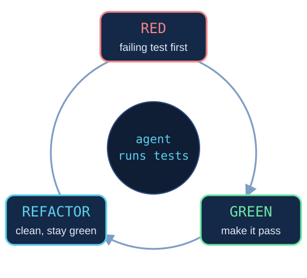

Recommended: allow the agent to run tests on its own. TDD gives it a target; junk tests give it the wrong one.

The test is the spec: fail first, pass, then clean up while staying green.
write test → run → read failure → fix → rerun
Give the agent the test command and let it repeat until green, instead of you pasting errors back.
They break on harmless changes, so the agent fixes tests instead of code.